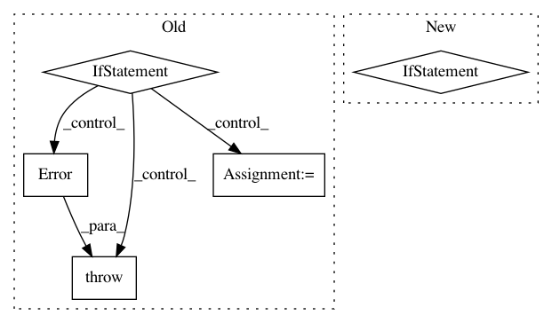

8166563234323a086cd5045dee6eb88f05ce39bf,lib/streamlit/util.py,,open_browser,#Any#,47
Before Change
// the terminal, which is spammy and annoying. So instead we start the
// browser ourselves and send all its output to /dev/null.
if env_util.IS_LINUX_OR_BSD:
cmd = ["xdg-open", url]
elif env_util.IS_DARWIN:
cmd = ["open", url]
else:
raise Error("Cannot open browser in platform "%s"" % system)
with open(os.devnull, "w") as devnull:
subprocess.Popen(cmd, stdout=devnull, stderr=subprocess.STDOUT)
After Change
return
_open_browser_with_webbrowser(url)
return
if env_util.IS_DARWIN:
_open_browser_with_command("open", url)
return
import platform
raise Error("Cannot open browser in platform "%s"" % platform.system())
In pattern: SUPERPATTERN
Frequency: 3
Non-data size: 5
Instances
Project Name: streamlit/streamlit
Commit Name: 8166563234323a086cd5045dee6eb88f05ce39bf
Time: 2019-11-18
Author: monchier@users.noreply.github.com
File Name: lib/streamlit/util.py
Class Name:
Method Name: open_browser
Project Name: GoogleCloudPlatform/PerfKitBenchmarker
Commit Name: eb687adc7f6451c9c5fa8a474af6ba759ab4fea2
Time: 2016-02-15
Author: carlos.torres@rackspace.com
File Name: perfkitbenchmarker/providers/rackspace/rackspace_virtual_machine.py
Class Name: RackspaceVirtualMachine
Method Name: _GetBootDevice
Project Name: GoogleCloudPlatform/PerfKitBenchmarker
Commit Name: dc0eb66a399d49e13b7e6beda0f726737eedb520
Time: 2016-09-06
Author: nlavine@google.com
File Name: perfkitbenchmarker/providers/digitalocean/digitalocean_virtual_machine.py
Class Name: DigitalOceanVirtualMachine
Method Name: CreateScratchDisk